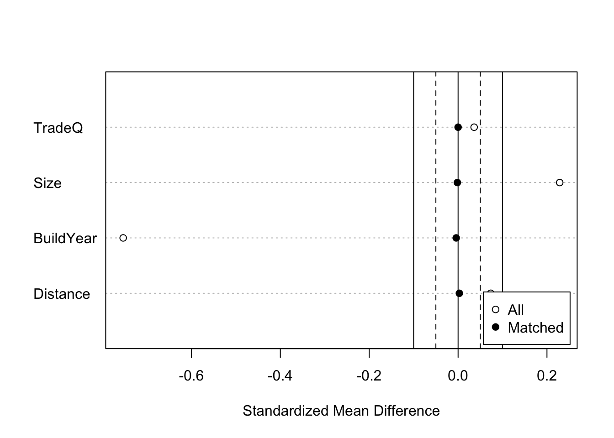
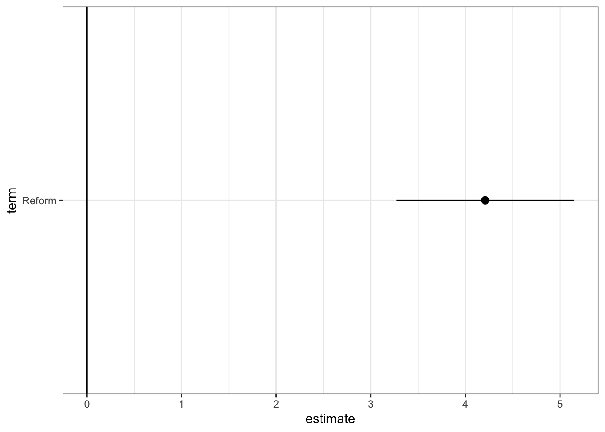
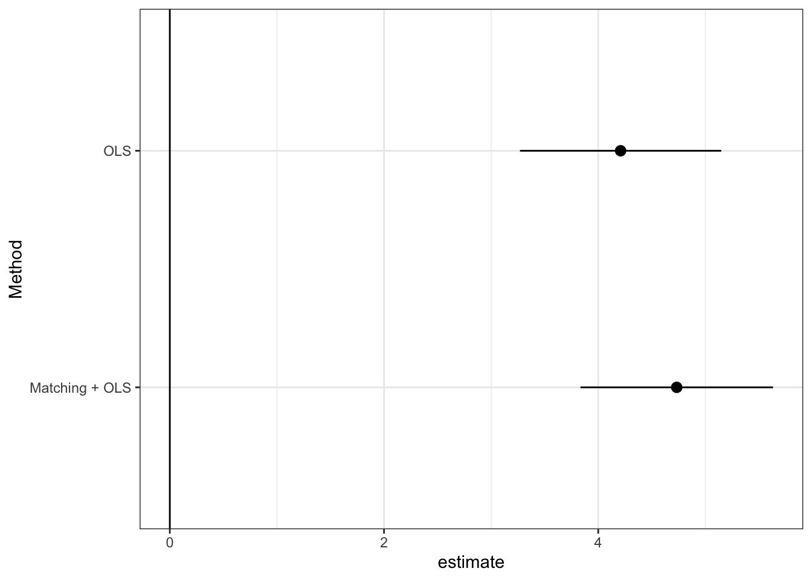

library(tidyverse)
library(estimatr) # Estimation with robust standard error
library(MatchIt) # Matching for preprocess
Data_R <- read_csv("ExampleData/Example.csv")4 線形モデルによるパラメータの推定
関心のあるパラメータ\(\tau(X)=E[Y|d,X]-E[Y|d',X]\)を埋め込んだ線形モデルを推定する。
- 典型的には、\(E[Y|D,X]\)を線形近似し、推定する。
\[E[Y|D=d,X=x]=\underbrace{\tau}_{Interest\ parameter}\times d+\underbrace{f(x)}_{Nuisance\ function}\] - \(f(X)=\beta_0 + \beta_1 X_1 + ...+\beta_LX_L\)
\(\tau\)について点推定だけでなく、信頼区間も推定する。
Section 4.2 線形モデルを推定し、信頼区間を計算する方法を紹介
Section 4.3 近似モデルの定式化への依存度を下げるために、マッチング法を用いた前処理を導入
Section 4.4推定結果の表によるまとめ、可視化、および複数の推定結果を効率的に保存する方法を紹介
4.1 設定
4.2 パラメータの推定
\(\tau(x)=\tau,f(x)=\beta_0+\beta_1x_1+...+\beta_Lx_L\)と特定化
サンプル内MSEを最大化するように推定
線形モデルによる推定は、いくつかの問題がある
異なるグループ間で、\(X\)の分布が異なる場合、回帰式の定式化に強く依存する
一般に平均効果ではなく、加重平均が推計される
サンプルサイズに比べて、少数のコントロール変数を導入できない
以下ではマッチング法、機械学手法を用いた頑強な推定を目指す
robust standard errorを計算するためにestimatrパッケージを利用
lm_robust関数で推定
lm_robust(Price ~ Reform + TradeQ + Size + BuildYear + Distance, # Outcome ~ Treatment + Controls
data = Data_R) Estimate Std. Error t value Pr(>|t|) CI Lower
(Intercept) -1388.4988461 26.32698942 -52.740510 0.000000e+00 -1440.1030211
Reform 3.8725217 0.43467146 8.909078 5.737306e-19 3.0205116
TradeQ 0.6242352 0.19779659 3.155945 1.602999e-03 0.2365293
Size 0.8355270 0.01284035 65.070430 0.000000e+00 0.8103583
BuildYear 0.6981813 0.01307451 53.400209 0.000000e+00 0.6725537
Distance -1.4171745 0.04437330 -31.937548 1.679446e-216 -1.5041516
CI Upper DF
(Intercept) -1336.8946710 14787
Reform 4.7245319 14787
TradeQ 1.0119411 14787
Size 0.8606957 14787
BuildYear 0.7238090 14787
Distance -1.3301973 14787statsmodelsパッケージを利用
heteroscedasticity robust (HC3)を設定
results = smf.ols('Price ~ Reform + TradeQ + Size + BuildYear + Distance', data=Data_Python).fit(cov_type='HC3')
print(results.summary()) OLS Regression Results
==============================================================================
Dep. Variable: Price R-squared: 0.425
Model: OLS Adj. R-squared: 0.425
Method: Least Squares F-statistic: 1197.
Date: Sun, 12 Mar 2023 Prob (F-statistic): 0.00
Time: 14:49:42 Log-Likelihood: -67666.
No. Observations: 14793 AIC: 1.353e+05
Df Residuals: 14787 BIC: 1.354e+05
Df Model: 5
Covariance Type: HC3
==============================================================================
coef std err z P>|z| [0.025 0.975]
------------------------------------------------------------------------------
Intercept -1388.4988 26.334 -52.726 0.000 -1440.113 -1336.885
Reform 3.8725 0.435 8.906 0.000 3.020 4.725
TradeQ 0.6242 0.198 3.155 0.002 0.236 1.012
Size 0.8355 0.013 65.048 0.000 0.810 0.861
BuildYear 0.6982 0.013 53.385 0.000 0.673 0.724
Distance -1.4172 0.044 -31.928 0.000 -1.504 -1.330
==============================================================================
Omnibus: 33924.864 Durbin-Watson: 1.199
Prob(Omnibus): 0.000 Jarque-Bera (JB): 1076517538.013
Skew: 21.520 Prob(JB): 0.00
Kurtosis: 1323.863 Cond. No. 3.28e+05
==============================================================================
Notes:
[1] Standard Errors are heteroscedasticity robust (HC3)
[2] The condition number is large, 3.28e+05. This might indicate that there are
strong multicollinearity or other numerical problems.4.2.1 RCTデータへの応用
原因変数が完全にランダム化されている場合、因果効果の識別を目的に回帰分析を応用する必要はない
因果効果の推定の改善、効率性向上、を目的とした線形モデルの利用は議論されてきた
Lin (2013) は、以下のような交差項を導入したモデルを用いることで、平均の差の推定に比べて、漸近的効率性が悪化することはない（同等か改善する）ことを示した
\[E[Y|D,X]=\beta_{D}\times D+\beta_1\times X_1+...+\beta_L\times X_L\]
\[+\underbrace{\beta_{1D}\times D\times X_1+...+\beta_{LD}\times D\times X_L}_{交差項}\]
- lm_lin関数で推定可能
lm_lin(Price ~ Reform, # Outcome ~ Treatment
~ TradeQ + Size + BuildYear + Distance, # ~ Controls
data = Data_R) Estimate Std. Error t value Pr(>|t|)
(Intercept) 38.574938756 0.23419642 164.7119043 0.000000e+00
Reform 3.198398709 0.46416205 6.8906941 5.776551e-12
TradeQ_c 0.589548934 0.24839614 2.3734223 1.763681e-02
Size_c 0.836196335 0.01462551 57.1738400 0.000000e+00
BuildYear_c 0.742123631 0.01496681 49.5846277 0.000000e+00
Distance_c -1.393206627 0.05322394 -26.1763134 1.120269e-147
Reform:TradeQ_c 0.172655995 0.37815512 0.4565745 6.479836e-01
Reform:Size_c -0.004222054 0.03058905 -0.1380250 8.902225e-01
Reform:BuildYear_c -0.154969457 0.03044214 -5.0906230 3.612720e-07
Reform:Distance_c -0.086574362 0.09590703 -0.9026905 3.667049e-01
CI Lower CI Upper DF
(Intercept) 38.11588462 39.03399290 14783
Reform 2.28858332 4.10821410 14783
TradeQ_c 0.10266158 1.07643629 14783
Size_c 0.80752852 0.86486415 14783
BuildYear_c 0.71278682 0.77146044 14783
Distance_c -1.49753218 -1.28888107 14783
Reform:TradeQ_c -0.56857511 0.91388710 14783
Reform:Size_c -0.06418041 0.05573630 14783
Reform:BuildYear_c -0.21463984 -0.09529907 14783
Reform:Distance_c -0.27456407 0.10141535 147834.3 マッチング法による修正
回帰を行う事前準備としてマッチング法を利用する
重回帰が持つ関数形への依存度を減らせる (Ho et al. 2007)
MathItパッケージを利用
多数のマッチング法が実装されている
4.3.1 Coarsened exact matching
Coarsened exact matching (Iacus, King, and Porro 2012)の実装
- 連続変数をカテゴリー変数化することで、マッチングできるサンプルサイズを増やすことが期待できる
fit.m <- matchit(Reform ~ TradeQ + Size + BuildYear + Distance,
data = Data_R,
method = "CEM"
)- マッチング結果の表示
fit.mA matchit object
- method: Coarsened exact matching
- number of obs.: 14793 (original), 9625 (matched)
- target estimand: ATT
- covariates: TradeQ, Size, BuildYear, DistanceSample sizesにて、マッチングできなかったサンプル数（14793の事例中、9625サンプルがマッチングできなかった）が確認できる
マッチング結果の図示
fit.m |>
summary() |>
plot(abs = FALSE)
- マッチング結果を変数として含んだデータを作成
df <- match.data(fit.m)“subclass”: マッチングしたグループ
“weights”：マッチング後の推計に用いるウェイト
マッチングしたデータを用いた推定
- 新たに作成されるweight (defaltではweights)を用いた、加重推定で実装
lm_robust(Price ~ Reform + TradeQ + Size + BuildYear + Distance,
df,
weights = weights,
clusters = subclass) Estimate Std. Error t value Pr(>|t|) CI Lower
(Intercept) -1311.7224181 49.24745093 -26.635336 1.958605e-69 -1408.8022390
Reform 4.7327819 0.45785352 10.336891 2.940391e-23 3.8336958
TradeQ 0.4481538 0.28287157 1.584301 1.144379e-01 -0.1090656
Size 0.7219818 0.01918252 37.637485 2.430409e-113 0.6842264
BuildYear 0.6615543 0.02458901 26.904467 1.016361e-70 0.6130877
Distance -1.3201228 0.07892931 -16.725382 2.395637e-43 -1.4755318
CI Upper DF
(Intercept) -1214.6425972 211.0880
Reform 5.6318679 636.5110
TradeQ 1.0053732 240.7352
Size 0.7597372 288.6097
BuildYear 0.7100210 214.7855
Distance -1.1647137 264.75444.3.2 Propensity score with subclassification
Coarsened exact matchingでもマッチングできないサンプルが多数出てくる可能性
- とくに\(X\)が大量にある場合
1次元の距離指標を用いて、マッチングを行う
- 距離指標としては、Mahalanobis’ Distance、Propensity scoreなど
ここではPropensity score \(p_d(X)\)を用いる
\[p_d(X)\equiv \Pr[D=d|X]\]
属性\(X\)のユニットの中で、原因変数の値が\(d\)である人の割合
未知の場合、データから推定する必要がある
推定された傾向スコアを用いたStratification マッチング (Imbens 2015 の推奨)
- ロジットにて傾向スコアを推定
fit.m <- matchit(Reform ~ TradeQ + Size + BuildYear + Distance,
data = Data_R,
method = "subclass",
estimand = "ATE"
)- マッチング結果
summary(fit.m)
Call:
matchit(formula = Reform ~ TradeQ + Size + BuildYear + Distance,
data = Data_R, method = "subclass", estimand = "ATE")
Summary of Balance for All Data:
Means Treated Means Control Std. Mean Diff. Var. Ratio eCDF Mean
distance 0.3418 0.2260 0.7825 1.4151 0.2293
TradeQ 2.4827 2.4422 0.0363 1.0239 0.0101
Size 49.8096 45.1755 0.2152 0.7953 0.0438
BuildYear 1993.5456 2003.2632 -0.7800 1.1529 0.1649
Distance 7.2755 6.9736 0.0740 1.0298 0.0149
eCDF Max
distance 0.3455
TradeQ 0.0184
Size 0.1621
BuildYear 0.3415
Distance 0.0337
Summary of Balance Across Subclasses
Means Treated Means Control Std. Mean Diff. Var. Ratio eCDF Mean
distance 0.2576 0.2545 0.0212 1.0285 0.0062
TradeQ 2.4606 2.4535 0.0063 1.0386 0.0060
Size 45.5250 46.3742 -0.0394 0.8215 0.0172
BuildYear 2000.4362 2000.8722 -0.0350 0.9634 0.0093
Distance 6.9579 7.0579 -0.0245 0.9047 0.0061
eCDF Max
distance 0.0160
TradeQ 0.0145
Size 0.0600
BuildYear 0.0353
Distance 0.0151
Sample Sizes:
Control Treated
All 11012. 3781.
Matched (ESS) 10508.41 2553.82
Matched 11012. 3781.
Unmatched 0. 0.
Discarded 0. 0. - マッチング結果の図示
fit.m |>
summary() |>
plot(abs = FALSE)
- マッチングしたデータを用いた推定
lm_robust(Price ~ Reform + TradeQ + Size + BuildYear + Distance,
df,
weights = weights,
clusters = subclass) Estimate Std. Error t value Pr(>|t|) CI Lower
(Intercept) -1311.7224181 49.24745093 -26.635336 1.958605e-69 -1408.8022390
Reform 4.7327819 0.45785352 10.336891 2.940391e-23 3.8336958
TradeQ 0.4481538 0.28287157 1.584301 1.144379e-01 -0.1090656
Size 0.7219818 0.01918252 37.637485 2.430409e-113 0.6842264
BuildYear 0.6615543 0.02458901 26.904467 1.016361e-70 0.6130877
Distance -1.3201228 0.07892931 -16.725382 2.395637e-43 -1.4755318
CI Upper DF
(Intercept) -1214.6425972 211.0880
Reform 5.6318679 636.5110
TradeQ 1.0053732 240.7352
Size 0.7597372 288.6097
BuildYear 0.7100210 214.7855
Distance -1.1647137 264.75444.4 付録：Dot-and-Whisker plotによる可視化
- Dot-and-Whisker図により点推定量と信頼区間を可視化
fit.m <- matchit(Reform ~ TradeQ + Size + BuildYear + Distance,
data = Data_R,
method = "CEM"
)
df <- match.data(fit.m)
Result1 <- lm_robust(Price ~ Reform + TradeQ + Size + BuildYear + Distance,
data = df) |>
tidy() |>
filter(term == "Reform"
) |>
mutate(Method = "OLS")
Result1 |>
ggplot(aes(y = term,
x = estimate,
xmin = conf.low,
xmax = conf.high)
) +
geom_pointrange() +
geom_vline(xintercept = 0) +
theme_bw()
Result2 <- lm_robust(Price ~ Reform + TradeQ + Size + BuildYear + Distance,
data = df,
weights = weights,
clusters = subclass) |>
tidy() |>
filter(term == "Reform"
) |>
mutate(Method = "Matching + OLS")
Result1 |>
bind_rows(Result2) |>
ggplot(aes(y = Method,
x = estimate,
xmin = conf.low,
xmax = conf.high)
) +
geom_pointrange() +
geom_vline(xintercept = 0) +
theme_bw()